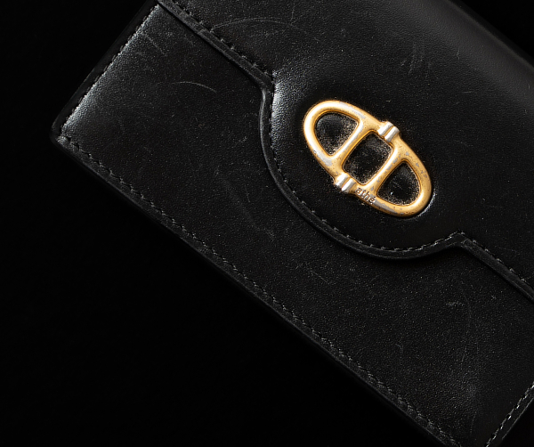
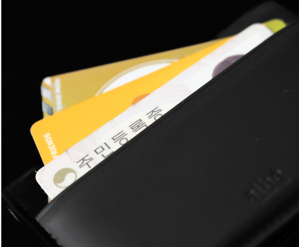
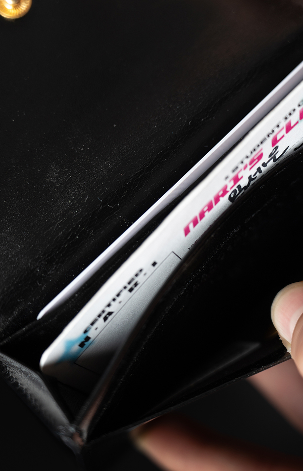

WALLET
LIM
SE-EUN
MY
ESSENTIAL
THAT
WALLET
2년 전, 이별을 하면서 그 사람과 관련된 물건들을 모두 정리한 적이 있다. 지갑도 그중
하나였다. 매일 사용하는 물건이었기에 볼 때마다 마음이 불편했고, 결국 다른 선물들과 함께 정리해버렸다.
그 후로 약 1년 동안 지갑 없이 지냈다. 특별한 이유가 있었던 건 아니다. 그냥 지갑이 굳이
필요하지 않았을 뿐이다. 내게 필요한 건 주민등록증과 카드 두 장 정도였고, 현금을 거의
쓰지 않다 보니 지갑 없이도 큰 불편은 없었다. 집 앞 편의점에 갈 땐 카드 한 장만 챙기면 됐고, 멀리 나갈 때도 교통카드 하나만 더 있으면 충분했다.
그러다 어느 순간, '그래도 지갑 하나쯤은 있어야 하지 않나?' 하는 생각이 들었다.
꼭 필요해서가 아니라, 지갑이 없는 내 모습이 어딘가 어색하게 느껴졌던 것 같다.
그렇게 네 달 정도 지갑을 알아봤다.
예전엔 지갑에 3만 원 이상 쓰는 걸 이해하지 못했다. 돈을 넣는 물건에 많은 돈을 쓰는 게 아이러니하다고 생각했기 때문이다. 그런데 주변 친구들이 10만 원이 넘는 지갑을 하나둘 쓰기 시작하면서, 그걸 볼 때마다 묘하게 기가 죽는 느낌이 들었다. 열등감까지는 아니지만, 괜히 나만 어린애처럼 느껴졌던 것 같다. "이제 곧 20대인데, 너무 저렴한 지갑은 좀 그렇지않나" 하는 생각도 들었다. 그래서 예산을 15만 원으로 잡고, 그 안에서 마음에 드는 지갑을 찾아보기로 했다.
조건은 간단했다. 너무 유명하지 않고, 열고 닫을 수 있는 플립형 카드 지갑. 그렇게 찾은 것이 지금 쓰고 있는 이 지갑이다. 13만 원대의 가죽 카드지갑. 미니 핸드백처럼 생긴 디자인이 마음에 들었고, 수납공간도 생각보다 넉넉했다. 물론 지금도 넣고 다니는 건 별로 없다. 크게 특별할 건 없지만, 나름의 과정을 거쳐 고른 지갑이다. 시간이 좀 걸렸지만, 이제는 나만의 물건이 하나 생긴 것 같아 괜히 괜찮다.
내가 지금 사용하는 지갑은 2024년 9월 6일에 구매했다. 처음 사용했을 때는 꽤 질서 있게 정리된 상태였다. 중앙 수납공간엔 카드 두 장과 주민등록증을 넣고, 뒷면 수납공간엔 교통카드를 따로 보관했다. 필요한 것만 깔끔하게 넣어 다니는 기분도 나쁘지 않았다.
하지만 시간이 지나면서 점점 제자리를 잃기 시작했다. 물건을 원래 있던 자리에 다시 두는 걸 잘 못하는 내 성격이 지갑에도 드러난 것 같다. 지금은 뒷면 수납공간에 세 장의 카드를 한꺼번에 밀어 넣다 보니 가죽이 늘어나버렸다. 이제는 카드 하나를 꺼낼 때 나머지가 함께 빠져나오지 않게 조심해야 한다.
중앙 수납공간은 자연스럽게 비워졌고, 그 자리를 대신한 건 쓰지 않는 두 장의 카드였다. 하나는 예전에 자취하던 곳 근처 빨래방의 멤버십 카드, 다른 하나는 졸업한 대학교의 학생증. 둘 다 더 이상 쓸 일은 없지만, 굳이 뺄 이유도 없다. 딱히 의미를 부여하기보다는, 그냥 그대로 두는 쪽이 편했기 때문이다.
 전에도 말했지만 나는 물건을 정리해서 버리거나 치우는 일에 큰 동기를 느끼지 않는다. 쓰지 않더라도 딱히 불편하지 않으면 그대로 둔다. 지갑을 조심스럽게 다루는 편도 아니다. 가방 안에서 굴러다니다 찍힌 자국, 주머니 속에서 생긴 마찰 자국, 몇 번 떨어뜨리며 생긴 흠집까지. 지갑 여기저기엔 생활 흔적이 그대로 남아 있다. 잔기스 많은 이 지갑을 보면 내 덤벙대고 게으른 성격이 고스란히 보인다.
그래도 이상하게, 이 모습도 지금은 나름대로 괜찮다고 느낀다.
사실, 이 지갑이 정말 필요했는지는 잘 모르겠다. 13만 원이나 주고 산 이유도 단지 지갑
하나쯤은 있어야 하지 않나 싶은, 약간의 체면치레 때문이었다. 창피하다는 감정 하나로 스스로를 설득했고, 지갑은 그저 없어도 그만인 물건이었다.
그런데 이상하게도, 사람처럼 물건에도 정이 든다. 처음엔 아무 의미 없던 지갑이, 어느새 내 일상에 스며들어 자리를 잡았다. 이제는 이 지갑이 사라진다면 허전함이 꽤 클 것 같다.
나는 원래 물건을 쉽게 버리지 않는 편이다. 망가지거나 더는 쓸 수 없을 때까지 곁에 두는 게 습관처럼 되어 있다. 이 지갑도 마찬가지다. 잃어버리지 않는 한, 낡고 닳아 더는 쓸 수 없을 때까지 계속 함께할 것이다.
아직은 10개월. 짧다면 짧은 시간이지만, 앞으로 이 지갑과 함께 쌓아갈 여정이 기대된다. 단순한 소지품을 넘어서, 나와 함께 시간을 살아가는 작은 존재처럼 느껴지기 시작했다.
나는 물건을 잘 잃어버리지 않는 편이다. 항상 손에 쥐거나 주머니에 넣고 다니는 습관 덕분이다. 그런데 한번은, 사고가 났다. 지갑을 산 지 얼마 되지 않았을 때였다. 문제는 술이었다. 친구들과 잔뜩 마신 날, 제정신이 아니었고, 다음 날 아침에야 사태를 깨달았다.
숙취로 몸은 천근만근인데, 해장용으로 항상 마시던 오렌지 주스를 사러 나가려다 지갑이 없다는 걸 알아챘다. 가방, 어제 입었던 옷, 책상 위, 방바닥까지 다 뒤졌지만 감감무소식. 등줄기로 식은땀이 흘렀다. 숙취는 온데간데없고 머릿속은 온통 지갑뿐이었다.
부랴부랴 어젯밤 함께 놀았던 친구에게 연락해 동선을 하나하나 되짚었다. 술집, 술집 앞 편의점, 집에서 10분 떨어진 벤치까지. 술집에 전화해봤지만 분실물은 없다는 답변. 편의점도 마찬가지였다. 마지막 희망은 벤치. 사실 마음은 반쯤 포기한 상태였다. 혹시나 하는 마음으로 길을 걸으며 바닥을 유심히 살폈다. 벤치에 도착했을 때, 역시나 아무것도 없었다. 한숨을 내쉬며 주변을 훑던 그때, 벤치 아래 어둑한 그림자 속에서 반짝이는 금빛이 눈에 들어왔다. 나의 지갑이었다. 믿기지 않을 정도로 반가웠다.
그 순간 느꼈다. 지갑이 거기 가만히 있어준 것이 얼마나 큰 행운이었는지를. 당연하게 여겼던 물건이 얼마나 소중한지를. 그날 이후로, 지갑을 조금 더 조심스럽게 다루게 되었다.